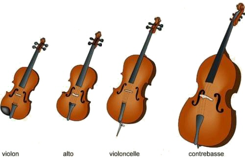

Le Violoncelle
Le violoncelle est un instrument à corde frottée. Les instruments à cordes frottées se joue avec un archet.
Dans la famille des cordes frottées, il y a le violon avec un son aigu, ensuite il y a l'alto avec un son un peu plus grave que le violon, puis le violoncelle et enfin la contrebasse qui a un son très grave.
